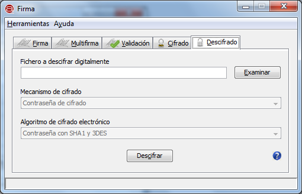
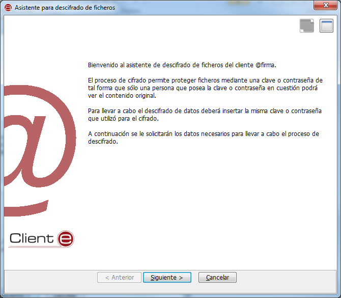
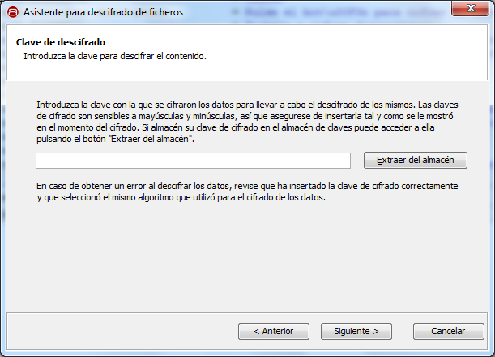

Desde la ventana de "Descifrado" podemos descifrar un fichero de datos que haya sido previamente cifrado por medio de las funcionalidades de la ventana de "Cifrado".

Las opciones de configuración de esta pantalla son:
En la vista simple de la interfaz, el mecanismo de cifrado es obligatoriamente "Contraseña de cifrado" y el algoritmo es siempre "Contraseña SHA1 y 3DES".
Recuerde que el mecanismo y el algoritmo de cifrado seleccionado debe coincidir con el utilizado cuando se cifró el documento. Para facilitar este aspecto, es recomendable utilizar siempre los mismos valores para estos parámetros.
Al pulsar el icono de ayuda se muestra la ventana de ayuda para el menú "Descifrado".
Al pulsar el botón "Descifrar" se nos abrirá el asistente para la configuración del proceso de descifrado.

Al pulsar el botón "Siguiente >" se nos mostrará la pantalla del asistente para la inserción de la contraseña o clave de cifrado. Esta pantalla variará según el mecanismo de cifrado seleccionado.
Si se seleccionó el mecanismo de cifrado mediante contraseña, el asistente nos mostrará una pantalla para la inserción de la contraseña de cifrado. Sólo será necesario insertar esta para llevar a cabo el proceso.
Las opciones de configuración disponibles son:
En la caja de texto que aparece deberemos insertar la contraseña que se utilizó para el cifrado de los datos. Deben respetarse las mayúsculas y minúsculas de la contraseña original.
Al pulsar el botón "Siguiente >" se llevará a cabo el proceso de descifrado. Si ocurriese un error durante el mismo, se informaría al usuario con el mensaje correspondiente. Asegúrese en este caso de haber seleccionado el mecanismo y el algoritmo de cifrado correctos, además de la contraseña. Si el proceso finaliza correctamente, se mostrará un diálogo para el guardado del documento descifrado.
Si se seleccionó el mecanismo de cifrado mediante clave, el asistente nos mostrará una pantalla para la inserción de la clave que se utilizó en el proceso de cifrado. Sólo será necesario insertarla o recuperarla del almacén de claves para llevar a cabo el proceso.

Las opciones de configuración disponibles en esta pantalla son:
Al lado de los alias que aparecen en el almacén y que designan a claves del mismo, puede verse el algoritmo con la que es compatible a clave.

Al pulsar el botón "Siguiente >" se llevará a cabo el descifrado de los datos. En caso de producirse un error durante el mismo, se mostrará el mensaje correspondiente, mientras que, si finalizó correctamente, se mostrará un diálogo para selección donde se desea almacenar el documento descifrado.
Teclas de acceso rápido para los botones: